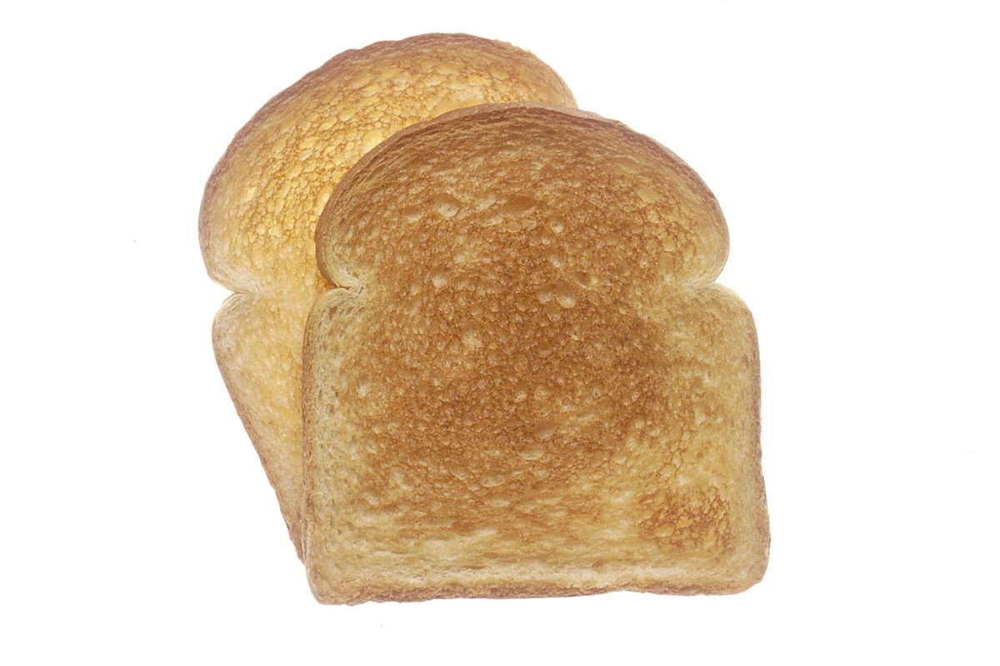

step 02 / 05 — コピー
メニュー
お品書きは準備中です。内容と価格が分かり次第、こちらに掲載します。
menu
| ドリンク | 準備中 |
|---|---|
| フード | 準備中 |
| 価格 | 準備中 |
| ご予約 | 準備中 |
最新の情報は Instagram でご確認ください。→ Instagram @cafe__hush2
image photos
以下はイメージ写真です。実際の提供内容を示すものではありません。





step 02 / 05 — コピー
お品書きは準備中です。内容と価格が分かり次第、こちらに掲載します。
| ドリンク | 準備中 |
|---|---|
| フード | 準備中 |
| 価格 | 準備中 |
| ご予約 | 準備中 |
最新の情報は Instagram でご確認ください。→ Instagram @cafe__hush2
以下はイメージ写真です。実際の提供内容を示すものではありません。
